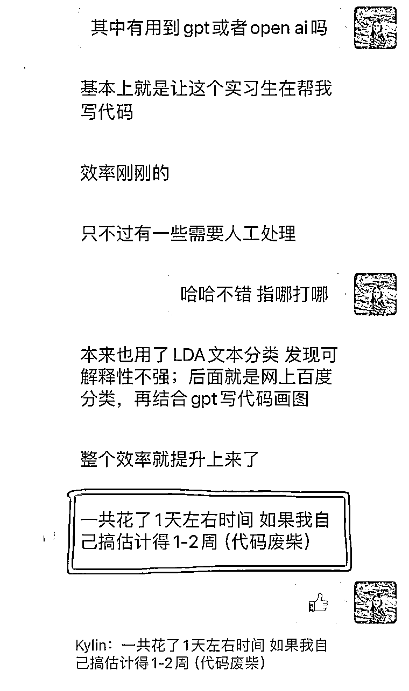
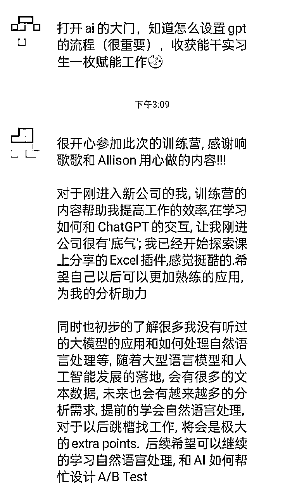

来源：https://kwi1nir3wz0.feishu.cn/docx/KRjYdyQOgoq2otxGAQ1cxCRNnhd
大家好！作为一个搞钱小白，很高兴今天终于能来交作业了 —— 完成了我来生财之后的第一次搞钱。虽然只是小小一笔钱，对各位大佬来说不足挂齿，但对我来说是一个里程碑，是我第一次独立的面对市场，从0到1的完成了一次商业闭环。 接下来的目标希望通过 1. 做大流量 2. 新增产品 3. 拓展海外三个战略来实现10倍的增长。希望三个月后能带着我50万的战绩，再回来给大家汇报一下😊！
我的前三十年，走的是典型的小镇做题家的路线。出生在二线小城市，父母都是普通的工人。从小我被灌输的理念就是“要好好学习，考上个好大学，找到份稳定的好工作，勤勤恳恳的过一辈子“。我也一路按着这条规划明确的路线前进，也不晓得人生还有什么其他选择。
还好读书这个游戏对我来说也还算擅长，一路走的比较顺利。初中毕业，我没有中考直接保送了重点高中，高考也顺利考上985，毕业之后到美国读研。毕业之后跳了几次槽，进了人人艳羡的硅谷科技大厂，拿着高薪，享受着公司免费的三餐和好福利。一切都好像上了正轨，直到有一天我突然意识到我不想再玩职场爬楼梯这个游戏了。
回想四年的大厂生活，我得到的正反馈其实很少。做过不少项目，但是作为一个非常成熟生态系统里的小小螺丝钉，我感受不到自己带给产品的影响，也体验不到用户因为我多了一些价值。作为一个数据分析师，我也总是只能坐在副驾驶座上，为别人出主意，没有办法体会到自己的决策落地后带来的成就感。如果上面这些只是让我工作中经常内耗，那见证经济的大环境从火热到萧条，经历了公司裁员，就是压死骆驼的最后一根稻草。
记得去年十月的时候，我刚给自己争取到带第二个人，本想在项目大干一场，争取升职。但是突然的一场裁员，把我的老板和底下带的两个人一并都裁了——只留下中间像我这种最能干活，工资又相对没那么高的老黄牛。我才发现“哦，原来我深思熟虑的全盘计划可以在瞬间就被击溃”。
我想，一定要做一些直面市场的，自己更能掌控的事业。从那开始我就一直开始思考要做什么，在摩洛哥旅游的时候，就在考察当地的到中国的留学市场。想了很多点子，都记在我的创业点子库，一直在摩拳擦掌准备行动，但一直都在等待开始的状态。后来接触到了生财，和互联网上的几位搞钱博主。这些案例让我知道原来赚钱可以拆解成一件这么具体的事情，也观察到所有成功赚到钱的人最大的特点就是行动力。
想到这里，我决定不再犹豫，先行动起来再说，先做起来拿个小结果，再慢慢调整方向。
从2021年初开始我就开始陆续的在小红书发视频分享我作为一名数据分析师的经验(小红书昵称：响歌歌）。当时的小红书，可以说发什么都有人看，可惜当时并没有认知和眼光，识别这是一个正在起飞的赛道。很惭愧，2021年发了几个视频迅速涨到6千粉之后，我没有抓住这个机会，直到最近才又重拾小红书，又连续发了几篇笔记，才到了一万粉。
在ChatGPT横空出世之后，我经常会收到焦虑的粉丝的私信，问我AI对数据分析师的影响怎么样, 之后该怎么样去应对。因为我工作中从去年七月份开始就开始启动一个大模型agent的项目，加上在硅谷科技行业，对于AI能做什么，对我们的生活有什么影响, 我好像确实比普通人更了解一些。我也从去年年中开始尝试了100+的AI数据分析工具，为自己的工作赋能提效，也常有初创公司的创始人和VC来找我测评AI产品。我意识到对于AI+数据分析这个话题，我好像确实比一般人有发言权。找到这个需求之后，我也做了一系列的视频来分享这个话题，反响很不错。
于是我就开始想，不如就做一门课《AI赋能数据分析师的训练营》，帮大家解决数据分析师的职场焦虑吧，也作为我从0到1跑通一个项目的尝试。
有了这个想法之后，我联系上了之前认识的一位博主，她是国内知名大厂的数据经理，后来辞职了做个人IP。我们两个商量着做一个AI圆桌会，专门讨论AI对数据分析师的职业发展的影响和我们如何有AI帮我们的工作赋能的。与此同时，我也和另外一位朋友搭上了线，三个人一拍即合开始如火如荼的准备圆桌会。
筹备了几周，在公域发了海报，讲座的报名情况还不错，报了有一百多号人。我们的讲座收了一个比较低门槛的费用9.9， 想要通过付费这个动作，筛选掉一些没有付费意愿的用户。要感谢这位博主，用她的私域带进来大部分粉丝，后来有几个转化成了我们的学员，也算是我们做课路上的贵人。
这次讲座帮助我们验证的市场的需求，直播过程中大家讨论得很踊跃，直播的结尾我预告了我们即将会发起一门训练营的时候，也得到几个同学的响应，大家还给我们出主意应该怎么去做课。我们采纳了其中一位同学的建议，做了一门实战项目课，带大家通过几个实战项目，了解AI如何去改造数据分析的流程。
讲座结束之后，根据大家的建议，我们马不停蹄的做了一份大纲出来，并且采用投票的方式和大家共创课程的内容。具体的方式是，我们选了5个实战项目，大家投票选出最高票的三个，我们再进行课程开发。投票这件事让大家有了参与感，大家也在群里有了几波讨论，后来投了票的十几个同学基本都报名。我们发觉“共创”这招好像挺好用，从此之后，“共创”就成了我们再去增加课程新内容的方式。
这中间要感谢生财上分享知识付费经验的大大们，特别感谢三位我的互联网导师。
加入生财之后，我最大的收获就是发现任何事情都有解法，而且大概率别人已经找到了一个不错的解法，我们只要站在巨人的肩膀上继续迭代就行。
讲座群带进来的人差不多有10%转化到了训练营，带给我们第一批学员。除此之外，第一期的课程我们并没有在公域上额外做宣传了。因为十二月底，要回国结婚，回国之后两个人又双双生病了十几天，勉强挤出来的时间都拿来课程开发，所以第一期我们就放弃了在公域上额外宣传，先优先把把第一期的十几个同学交付好。
第一次交付我们采用直播课的形式，这样节省提前录制的时间，因为当时我们开课的时间比较赶。也可以实时的观察到学员的问题的和反应，便于之后调整课程。作为一个重度i人，直播讲课对我们来说是一个巨大的挑战，记得在上第一次的直播课前，我反复练习了快十遍，写了逐字稿。就算做了充足的准备，连续讲了一个小时还是提心吊胆。不过还好最终效果不算太差，必要的时候推自己一把才能看到自己的潜能。
为期五周的交付，我们是一边做课，一边交付，卡着deadline去完成给同学的内容，有好几次都有些愧疚，觉得虽然已经尽了心力，但还只交付给同学们一套有点粗糙的课程。
但还好五周时间，也都顺利坚持下来，成功交付了我们的第一期课程，也收获到了不少好评。特别是看到同学们用AI为自己的工作大幅提效——把本来要做一周的活一天就干完了，真的非常有成就感！是我在大厂四年从来没有感受到过的。

回想起来，完成真的比完美更重要，正因为有了这第一次的跑通闭环，我们才知道卡点在哪，才能后续进行重点击破。我们的课程是重交付的，对学员付出的时间很有要求。最后也有一个大作业，非常花时间，要求大家挑一个自己的工作的场景，用课程学到的知识用ai做一遍。虽然时间投入大，但参与的同学都反应收获满满，表示自己操练一遍和听别人的展示非常有收获。有一点观察是我们也发现这个学员做的案例，可以积累成为训练营的资产。卖个人ip的知识只是一次性的消费而已，但是社群里不断积累的案例可以成为社群长期付费的秘诀。

本来以为第一期交付之后，我们只需要把之前的模式不断复制就好。但没想到真正的挑战其实发生在第二期训练营的课程招生过程中。
第一期依托于直播课带进来的流量和另外一位博主的加成，第二期招生是真的需要我们从0开始招生，打通整个流量闭环的。我们这次主要通过公域发视频引流到私域，私域再进行成交。我主攻小红书，有一万粉丝左右。我的partner在小红书和b站都有账号，两万粉丝左右，但是粉丝不够精准。
这是我第一次用我的小红书账号变现，还是有点小紧张。本来信心满满要招40个学生，最终只招了16个，但这次一次当头棒喝，让我们意识到把流量做起来有多重要。
测试下来，小红书的效果更好些，可能因为我的粉丝基础比较牢固。只有两周的时间宣传，我这边一共只发了两篇笔记，有一篇还是预告之后要发什么😂。大概吸引到小红书群250人，加到私域的有70、80人左右，最后转化了快10个人。这中间学到几点很重要的：
有了外包不重要的任务想法之后，我首先明确了可以外包的任务，也就是剪辑和社群的运营。剪辑我在网上找了几个大学生剪辑师和剪辑机构，打算让他们几个人试着剪几次，比较一下，从中选出最适合我的风格的，长期合作。
而运营，我从第一期的优秀学员里来做我们的助教。这位同学真是完美助教的人选，学习认真，积极勤奋。而且马上大学毕业，还没开始上班，有时间有动力帮我们带着训练营一起往前走。
要实现10倍的增长，关键就是要扩大漏斗的顶部，带进来更多的流量。看了生财上的不少帖子结合自己的观察，总结了几个途径 (欢迎各位大佬批评）：
结合我自己的优势(做内容），我的决定是把内容引流作为我的基本盘，同时结合分销+转介绍来锦上添花。如果还有空可以接触一下平台，就算最终不合作但是平台做过大量的课一定对哪种课好卖比我们更有感知，交流一下应该也有帮助。
在流量管道搭起来之后，会考虑增加一个新产品。第一期的一位学员给了我一个很好的反馈——他说我们现在的课讲的很深，但受众可能不够广，可以考虑一个基础的小白AI数据分析课，让平常需要用到一些数据分析技能，但又不是专业做数据分析的朋友比如说销售、运营、财务可以都加入进来。
我本身实在美国，其实做的课程内容天然的就适合美国的数据分析师/数据科学家。而且如果出英文课的话，因为汇率的关系，可以出更高的客单价，而且北美很多公司有提供员工的教育福利，可以报销培训课程。
接下去三个月，打算按着1>2>3的方向继续前进，朝着10倍的目标进发！